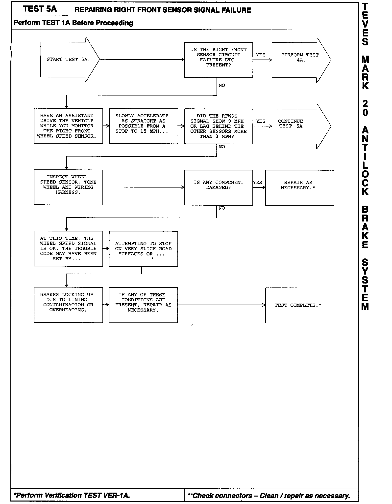
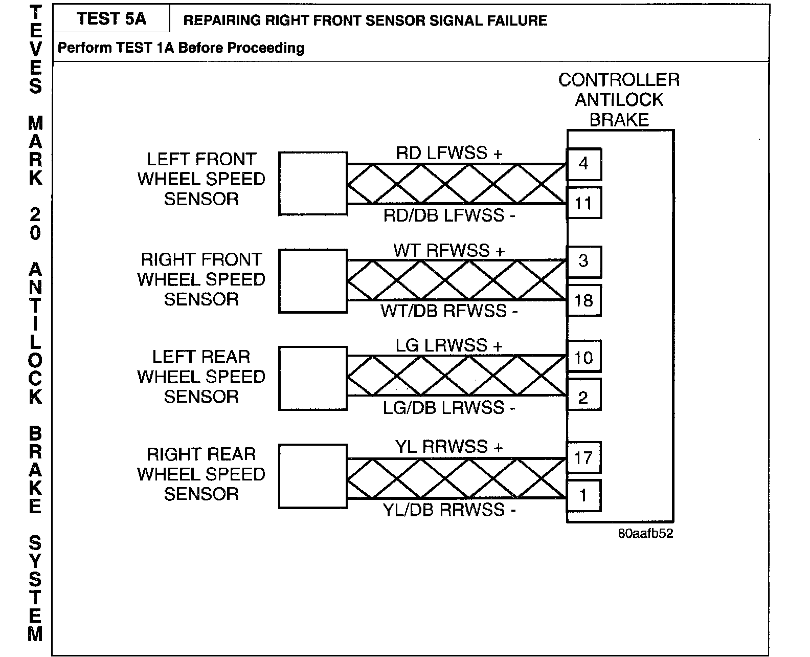
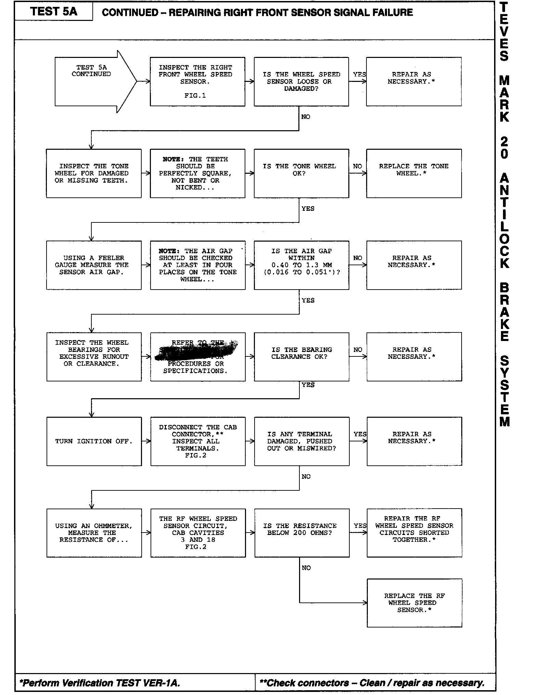
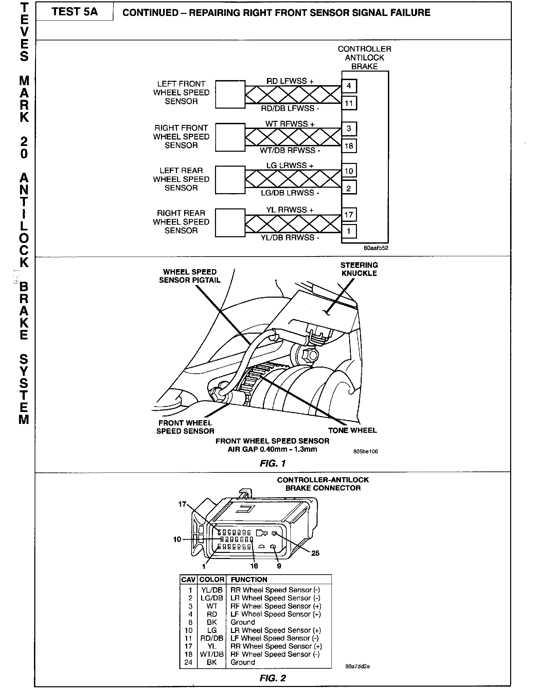

Test 5A - Right Front Sensor Signal Failure
Test 5A-Part 1:

Schematic:

Test 5A-Part 2:

Related Figures:

NAME OF CODE:
RF Sensor Signal Failure
WHEN MONITORED:
- Wheel speed comparison is checked at drive off or every 7 milliseconds
- Wheel speed continuity is checked continuously
- Wheel speed phase length supervision is checked every 7 milliseconds
SET CONDITION:
The Controller Antilock Brake (CAB) monitors the wheel speed signals at all times. If, during an ABS stop, the CAB commands any valve solenoid on for an extended length of time, and does not see a corresponding wheel speed change, the diagnostic trouble code will be set. The Diagnostic Trouble Code (DTC) can also be set if vehicle speed is below 20 km/h (12 mph) and a sensor signal is missing, the trouble code will be set as soon as the vehicle speed exceeds 20 km/h (12 mph). On hard acceleration, there is a 2-minute delay before the code is set to allow for possible wheel spin. The DTC can also be set if the CAB detects an erratic or otherwise improper signal.
POSSIBLE CAUSES:
- Damaged teeth on tone wheel
- Missing tone wheel
- Sensor head not inserted
- Sensor head not properly mounted
- Failed wheel speed sensor
- Long stops on ice
- Failed CAB
- Running the vehicle on a hoist or chassis dyno
- Defective outlet valve
NOTE:
- A single asterisk (*) in the diagnostic chart indicates the Verification Test must be performed.
- A double asterisk (**) in the diagnostic chart indicates a connector must be checked, then cleaned or repaired as necessary.